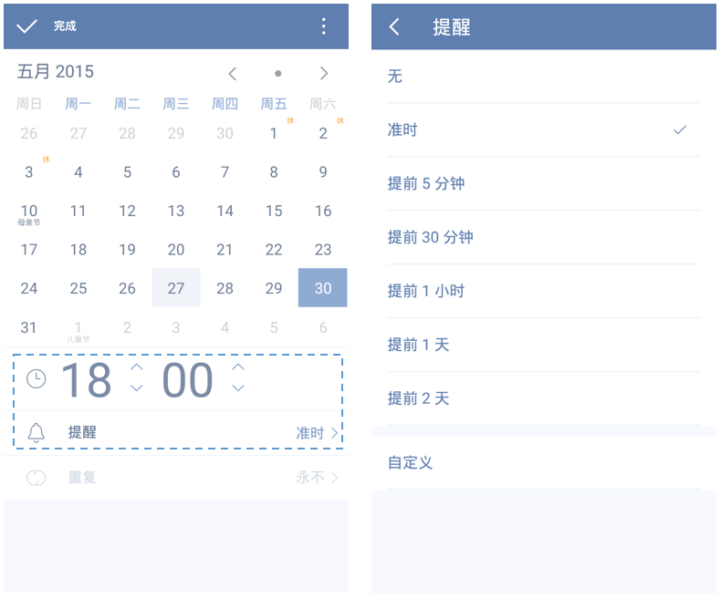

设置提醒
滴答清单不仅仅是记录你的待办事项和想法，还可以及时提醒可能会遗忘的事或你接下来要完成的任务，方便你安排一天的日程。
设置任务到期时间
为你的任务添加提醒时间，或者到期时间，只需进行以下操作：
- 新建一个任务、或者选择一个已有任务，进入任务详情页
- 点击时间区域，进入日期选择界面
- 选择你需要的开始提醒日期（重复任务）或者任务到期的日期，蓝色表示被选中，点击「完成」确认选择。
设置了到期时间任务，会根据具体情况出现在「今天」「最近7天」等智能清单。
如果你开启了每日提醒功能，则会在到期日提醒你。否则，除非你设置了具体的提醒时间，不然是不会弹出提醒的。
提醒时间和提前提醒
设置具体的提醒时间，可以在指定的时间收到提醒，确保不遗漏重要的事情。 设置提醒时间，只需进行以下操作：
- 新建一个任务、或者选择一个已有任务，进入任务详情页
- 点击时间区域，进入日期选择界面，并选择好日期
- 轻触点亮下方的「闹钟标志」，并选择好提醒的时间，点击完成以保存。
- 在闹钟区域已经被点亮的情况下，再次点击下方「铃铛标志」，可以设置并选择多个提醒时间，可以提前通知你安排下一步计划。
目前单个任务最多可以设置五个提醒，包括准时提醒在内。同时提前提醒的时间支持自定义设置，例如提前22小时、提前22天等。

清除任务的到期时间和提醒
清除到期时间和提醒，只需进行以下操作：
- 新建一个任务、或者选择一个已有任务，进入任务详情页
- 点击时间区域，进入日期选择界面
- 点击右上角的
 ，选择「清除」或者「撤销」本次操作即可。
，选择「清除」或者「撤销」本次操作即可。
设置提醒铃声
滴答清单安卓版支持更改默认的任务提醒铃声。选择合适的任务提醒铃声，及时提醒自己又不打扰他人。
- 在侧边栏中，点击右上角
 「设置图标」，进入设置
「设置图标」，进入设置 - 点击「提醒」，并选择「铃声」
- 跳转至铃声选择界面，选择适合的铃声即可
闹钟弹出窗
- 在侧边栏中，点击右上角 「设置图标」，进入设置
- 选择关闭或者开启「闹钟弹出窗」。蓝色状态为开启，灰色为关闭状态。
每日提醒
每日提醒是一个汇总提醒, 会在每日一个固定时间提醒您所有未完成以及当天需完成的任务。
开启每日提醒，需进行以下操作：
- 在侧边栏中，点击右上角 「设置图标」，进入设置
- 进入「提醒」，点击「每日提醒」，并选择需要的提醒时间
持续提醒
你可以开启「持续提醒」来对自己进行一个督促。开启后，消息栏中出现的提醒必须要完成后才能清除。
提醒不工作？
设置提醒时间到了，但是提醒没响起，或者延迟响起。请参考软件内：设置——>提醒——>提醒不工作？